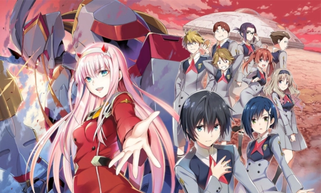
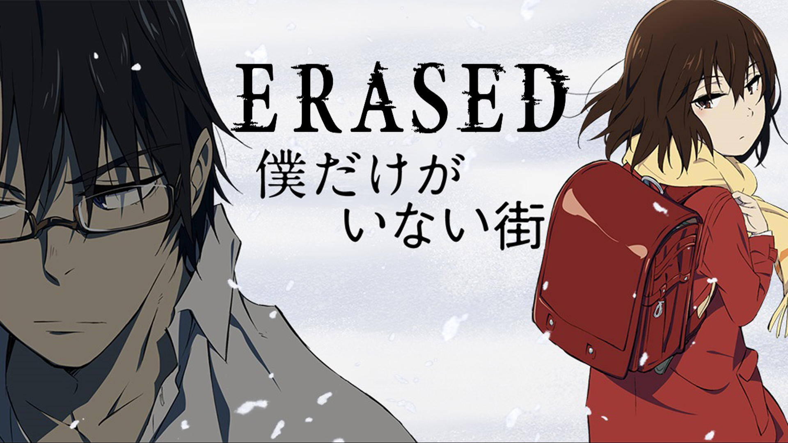
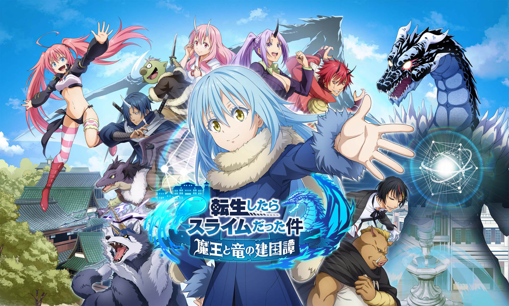

Catálogo de Animes Recomendados

Spy x Family
26 episódios
2022
Um espião cria uma família falsa para se infiltrar em uma escola, sem saber que sua filha adotiva é telepata e sua esposa é uma assassina.
Assistir
One Piece
1000+ episódios
1999
Luffy e sua tripulação procuram o tesouro One Piece para se tornar o Rei dos Piratas.
Assistir

Darling in the Franxx
24 episódios
2018
Jovens pilotam mechas para proteger a humanidade em um futuro distópico.
AssistirBlue Exorcist
37 episódios
2011
Rin descobre que é filho de Satanás e decide se tornar um exorcista.
Assistir

Erased
12 episódios
2016
Satoru volta no tempo para evitar o assassinato de sua colega de classe.
Assistir

Tensei Shitara Slime Datta Ken
48 episódios
2018
Um homem reencarna como um slime em um mundo de fantasia e constrói uma nação.
Assistir